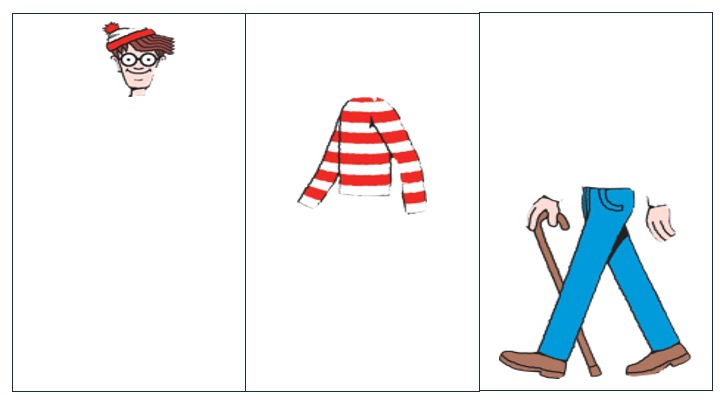
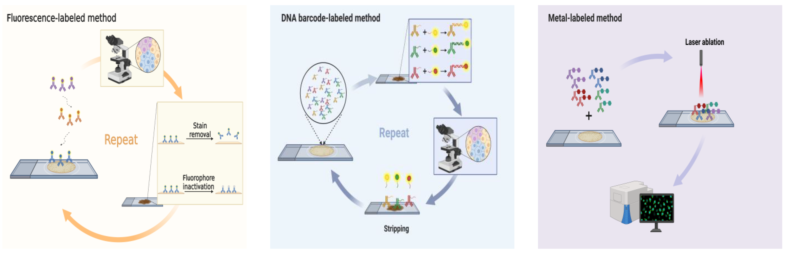
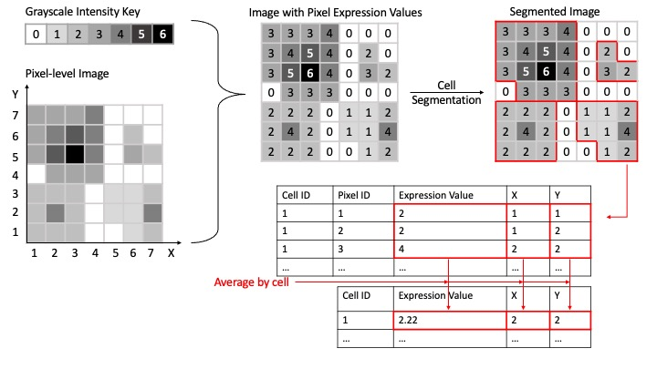

1 Chapter 1: Introduction to Multiplexed Immunofluorescence Images
1.1 Multiplexed Immunofluorescence Images
Multiplexed Immunofluorescence (mIF) Image is a recent development from Immunofluorescence (IF), a branch of Immunohistochemistry (IHC). The first structural conceptualization of IHC is established in 1941. Coons, Creech, and Jones (1941) described that in formalin-prefixed mammalian tissue, there is a type of antibody that can be identified by fluorescent antigens. Since then, IHC is developed into an important tool for cancer diagnosis (Duraiyan et al. 2012). Within the word “immunohistochemistry”, “immuno” refers to the antigen-antibody reaction in the process, “histo” means tissue, and “chemistry” is the process. During IHC, antibody can be tagged with labels such as enzyme, fluorochromes, which reacts when the corresponding antigen-antibody bind is formed (Ramos-Vara 2005). Similarly, the word immunofluorescence can split into “immuno” and “fluorescence”, and “fluorescence” corresponds to the fluorescent signal generated by the fluorocromes(Hussaini, Seo, and Rich 2022).
IHC/IF can only detect one biomarker for a tissue region. This limitation makes IHC/IF unable to identify more complicated expression patterns that require more than one biomarker (Sheng et al. 2023). The development of multiplexed IHC (mIHC)/IF(mIF) image resolved this issue. Multiplexed IHC/IF image display different protein information for each plex of the image, while retaining the spatial and morphological information of the tissue (Eng et al. 2022). mIHC/mIF can be seen as a stack of images, each presenting a different portion of the same tissue.

Figure 1.2 by Sheng et al. (2023) shows several different methods for creating mIF images. It can be seen that the first two methods both uses cycles of stain-photo-removal, and the last method is a one-off step where all labels are tagged at once. Sheng et al. (2023) also tabulated all multiplexd IHC/IF technologies, where the number of biomarkers that can be identified ranges from 4 to 100.

mIHC/mIF images are widely used in studies for immune tumor microenvironments (iTME). The studies often involves cell type proportions within a certain region, spatial clustering of immune cells or spatial interaction among different cell types (Wrobel, Harris, and Vandekar 2023). For example: Schürch et al. (2020) discovered that within granulcyte cell meightborhood, the enrichment PD-1+CD4+ T cells are correlated with the survival outcome of a subset of colorectal cancer patients; Chen et al. (2021) shows different immune cell proportion and clustering between different colorectal tumor types; Steinhart et al. (2021) found that certain immune cell proportions and spatial interactions are correlated with ovarian cancer patient survival outcomes.
1.2 Data Structure
For mIHC/mIF images, each individual “plex” corresponds to a different immune protein identified by a type of stain. Each plex goes through analogous transition as shown in Figure 1.3 and form a table of cell expressions, and the tables of different protein expressions are combined in the end.
Initially, greyscale intensity is assigned to each pixel. The greyscale intensity is taken as the intensity of marker expression. The image then goes through cell segmentation, which are usually based on machine learning or deep learning methods(McKinley et al. 2022; Schüffler et al. 2015). DAPI, a fluorescent stain typically used for cell morphology identification, is most often used for the initial cell segmentation. The same cell-segmentation will be used for all other marker channels. Next, the pixel intensities, pixel positions, and the cell that the pixel belongs to are entered into a dataframe. Finally, the pixel intensities and position will be averaged within the cell group. Often, the median of pixel intensities is used as well, to reduce the impact of pixel intensity outliers. The end result after combining all marker channels will be a dataset with each row representing an individual cell, columns of different marker expressions, and cell properties such as position, cell type (e.g. tumor cell or not, tissue type).
